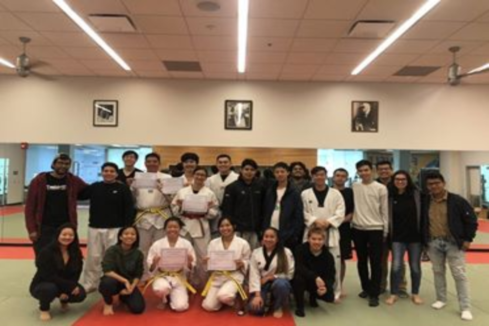
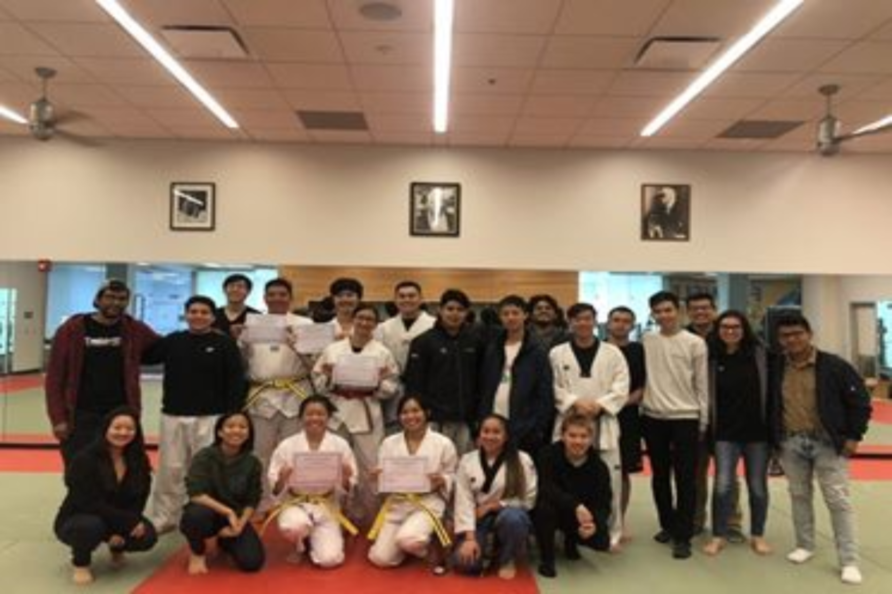
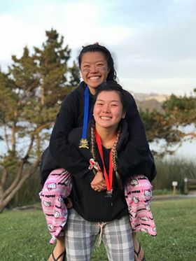
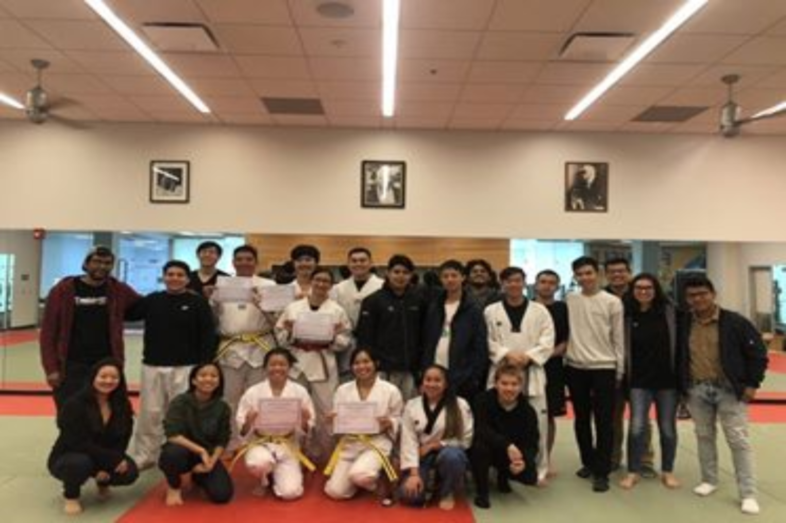
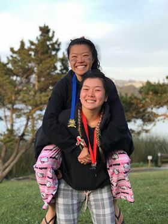

Jessica Lin
My name is Jessica Lin and I am currently enrolled as a student at the University of California, Riverside. My goal is to work towards becoming an accountant like my father as well as graduating college to obtain a master's degree and possibly becoming a certified public accountant.. Over the years, I have learned to scan/fax documents and record data through bookkeeping. In the beginning, I never wanted to be an accountant simply because the work seemed so tedious. However, I realized that the work is essential for all businesses; businesses rely on the work of accountants to understand how well they are managing.
I want to become an accountant because I want to ensure that my future will be full of right decisions, meaning that I will be stable financially, but also understanding the sacrifices I have and am willing to make in order to maintain the lifestyle I want. I don't want to be dependent on anyone except myself. I want to be a strong individual who can find solid ground in this society I consider myself to being more of an introvert, therefore I feel that being an accountant requires minimal interactions with people around me. Although my mathematical and social skills are lacking, I want to take the time I have left to improve and challenge myself because I know I am capable enough to achieve my goals as long as I work hard.
I have previously worked with a youth organization called SoundPost to strengthen my communication skills with different people, but to also help and give back to my community. I engaged in a public speaking for a children's perfomance
I like to manage my time efficiently so I can draw cartoon characters or weight lift to ease my stress. I enjoy expressing my emotions and creativity through simple sketches or coloring. I also enjoy the feeling of pushing my limits to becoming a stronger and healthier individual.
Experience
Barista
• Responsible for making drinks and snacks
• Obtained Food Certificate card
• Taking orders at a quick pace
Captain
• Ran workout sessions to help paddlers
• Wrote letters to Alumni Association for fundraising
• Building teamwork with 100+ paddlers
Education
UC Riverside
Bachelor's Degree
Master's In Business Administration
Portfolio
 



